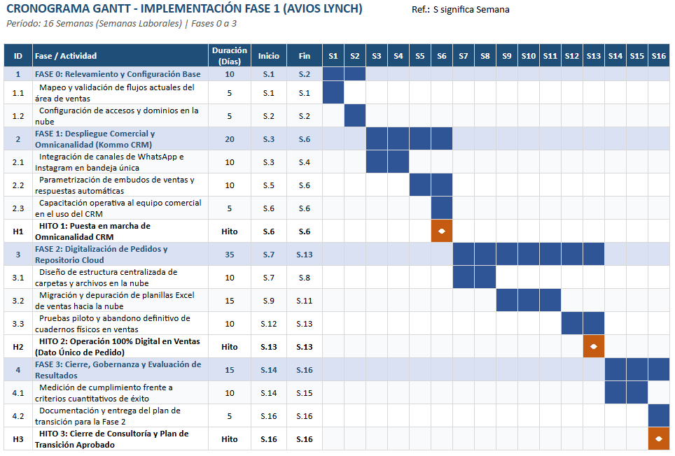
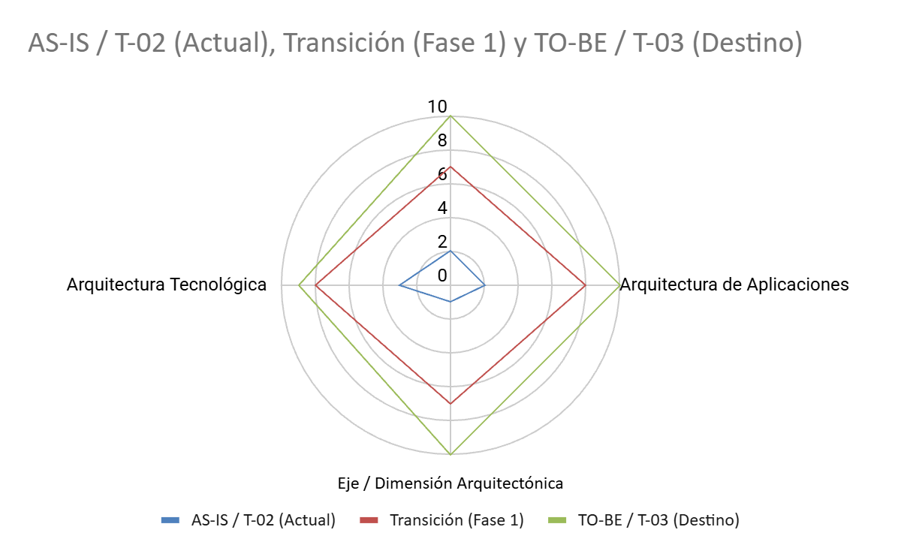
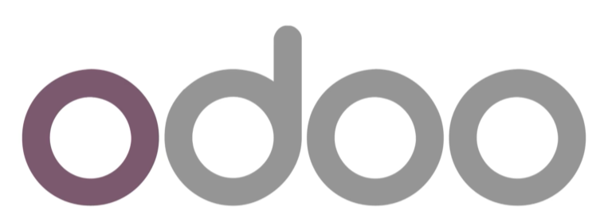

Alcance del proyecto
Introducción
El proyecto con Avíos Lynch surge de la necesidad de mejorar el funcionamiento general (procesos, sistemas, tecnología), relevados por el sponsor y que se manifiestan en su arquitectura origen, con el fin de:
(1) resolver la saturación en la atención de consultas entrantes por WhatsApp e Instagram;
(2) profesionalizar la estructura operativa y comercial estandarizando procesos e incorporando tecnología de gestión, y;
(3) posicionarse como proveedores integrales referentes del sector textil a nivel nacional, incrementando pedidos, facturación y mejorando la seguridad de los datos e información.
Ante ésta situación surge el proyecto que consta de implementar la Arquitectura de Transición en la cual se adapta el CRM actual (Kommo CRM) mediate la configuración óptima que permite ajustar y mejorar la atención y reducir demoras en la respuesta hacia el cliente. Asimismo, se comienza con la migración hacia la nube y adecuación de planillas más automatizadas que solo tendrán acceso en la nube, esto provoca que se unifique los datos y que no queden en computadoras personales. Estas planillas serán las que comiencen a funcionar como las soluciones SaaS (CRM y ERP básico) de transición, manteniendo el esquema BYOD, con el fin de unificar el flujo de información en un "Dato Único de Pedido" en un plazo de 6 meses, reduciendo los errores operativos y la pérdida de leads comerciales.
Alcance
Objetivos específicos
Objetivos Específicos que se incluyen:
- Comercial (CRM): Centralizar el 100% de los canales de contacto (WhatsApp e Instagram) en una bandeja única omnicanal, logrando clasificar y responder de forma autónoma la mayoría de las consultas frecuentes con respuestas casi instantáneas durante los primeros 3 meses de implementación.
- Operativo (CRM + Carpeta en nube): Digitalizar el 100% de los pedidos activos de la organización, eliminando por completo el uso de cuadernos físicos y planillas Excel locales, inicialmente por área de ventas, en un plazo de 4 meses;
A. Inclusiones (Dentro del Alcance - Fase 1)
- Dimensión Procesos (Negocio):
- Rediseño y estandarización del proceso de Omnicanalidad y Captación de leads.
- Comienzo de estandarización de procesos formalizados (etapa inicial para el área de ventas).
- Dimensión Sistemas (Aplicaciones y Datos):
- Parametrización de la herramienta CRM KOMMO para la gestión comercial y automatización de respuestas iniciales.
- Implementación de un ERP-CRM Cloud básico para la gestión del área de ventas.
- Migración de datos iniciales desde las planillas Excel actuales al ERP-CRM Cloud básico (planillas en la nube) para el área de ventas.
- Dimensión Tecnología (Infraestructura):
- Establecimiento de un repositorio documental centralizado en la nube para archivos.
B. Exclusiones (Fuera del Alcance inmediato - Postergado para Fase 2)
- Dimensión Procesos (Negocio):
- Estandarización del proceso de Diseño y Aprobación Digital con el cliente.
- Formalización del proceso de Orquestación de Producción con la red de 8 talleres externos .
- Comienzo de estandarización de procesos formalizados (etapa inicial para el resto de las áreas).
- Tableros de control y toma de decisiones: la construcción de tableros de Business Intelligence (BI) avanzados mediante la estandarización de los datos.
- Dimensión Sistemas (Aplicaciones y Datos):
- Implementación de un ERP-CRM Cloud básico para la gestión organizacional del resto de las áreas.
- Migración de datos iniciales desde las planillas Excel actuales al ERP-CRM Cloud básico (planillas en la nube) para el resto de la organización.
- Dimensión Tecnología (Infraestructura):
- Configuración de accesos seguros (2FA) y perfiles basados en roles para el esquema BYOD.
- Establecimiento de un repositorio documental centralizado en la nube para los diseños.
- Desarrollo de Software a Medida: No se realizará ningún tipo de programación de código desde cero. Toda la solución se basará en la configuración de herramientas SaaS comerciales existentes para mantener la filosofía de bajo costo de entrada.
- Renovación de Hardware: No se incluye la compra de computadoras, servidores ni dispositivos móviles corporativos; se mantiene la modalidad BYOD bajo gobernanza lógica.
Esquema de descomposición de trabajo
Estructura de desglose de actividades para la ejecución del proyecto:
- Fase 0: Relevamiento y Configuración Base
- 1.1. Mapeo y validación de flujos actuales del área de ventas.
- 1.2. Configuración de accesos y dominios en la nube.
- Fase 1: Despliegue Comercial y Omnicanalidad (Kommo CRM)
- 2.1. Integración de canales de WhatsApp e Instagram en bandeja única.
- 2.2. Parametrización de embudos de ventas y respuestas automáticas iniciales.
- 2.3. Capacitación operativa al equipo comercial en el uso del CRM.
- Fase 2: Digitalización de Pedidos y Repositorio Cloud (Área de Ventas)
- 3.1. Diseño de la estructura centralizada de carpetas en la nube.
- 3.2. Diseño de la estructura centralizada de los archivos compartidos en la nube.
- 3.3. Migración y depuración de planillas Excel de ventas hacia la nube.
- 3.4. Pruebas piloto y abandono definitivo de cuadernos físicos en ventas.
- Fase 3: Cierre y Evaluación de Resultados
- 4.1. Medición de cumplimiento frente a los criterios cuantitativos de éxito.
- 4.2. Documentación y entrega del plan de transición para la Fase 2.
Beneficios esperados
A partir de la implementación de la Arquitectura de Transición (Fase 1), Avios Lynch percibirá los siguientes beneficios directos, orientados a resolver la problemática operativa inicial:
Eliminación del cuello de botella comercial: La centralización de canales (WhatsApp e Instagram) en Kommo CRM erradica la pérdida de mensajes y consultas en teléfonos personales, garantizando atención inmediata y trazabilidad del cliente desde el primer contacto.
Integridad y centralización de datos: La migración de cuadernos físicos y planillas Excel locales a planillas/repositorios estructurados en la nube establece el principio de "Dato Único de Pedido", eliminando duplicaciones de carga y la pérdida de historial por rotura o extravío de equipos personales.
Reducción de errores operativos en ventas: La estandarización de las planillas en la nube y la automatización de respuestas iniciales reducen drásticamente las equivocaciones en la toma de pedidos, cotizaciones y registro de datos del cliente.
Disponibilidad y acceso remoto seguro: Al utilizar una infraestructura SaaS en la nube, el equipo comercial y el dueño pueden acceder a la información actualizada en tiempo real desde cualquier dispositivo (respetando el esquema BYOD) sin depender de servidores locales.
Control del gasto operativo (OpEx): La solución garantiza una mejora sustancial en la gestión manteniendo los costos por debajo del techo presupuestario del sponsor (<100 USD/mes) y con un CapEx nulo en hardware.
Cronograma

Stakeholders
Este proyecto, si bien pueden existir más de manera indirecta, afecta a los siguiente stakeholders:
- Gabriel (Dueño / Sponsor): Stakeholder clave con poder directo sobre el presupuesto, la aprobación de la solución y los objetivos estratégicos.
- Equipo de Ventas (Ramiro, Jessica y colaboradores): Stakeholders internos directos; son quienes operan el sistema y cambian sus hábitos diarios (abandonando el papel y WhatsApps personales).
- Los Clientes (Marcas textiles y compradores): Stakeholders externos fundamentales. Se ven afectados de forma directa en su experiencia de interacción al recibir una respuesta comercial más ágil, estructurada y centralizada mediante la omnicanalidad de Kommo CRM.
- Consultoría SAKU IT ADVISORY & CONSULTING: diseña y guía la transformación de la organización durante el proyecto proporcionando el análisis para que AVIOS LYNCH logre tomar la mejor decisión de este proyecto de actualización tecnológica.
- Proveedores de aplicativos: Son los que van a brindar las soluciones tecnológicas específicas (KOMMO CRM, Cloud Storage, etc).
- Proveedores de servicios adicionales: en este punto puede ser el proveedor de internet, el de antivirus, etc.
Este proyecto no afecta a la parte administrativa, ni logística, ni a los talleres ya que solo se basa en la actualización de Kommo y de comenzar a utilizar la nube para generar la información. Para la recomendación de pasos futuros, sí van a estar afectados (que es ya llegando al modelo TO-BE propuesto. Esto sería una primera etapa de implementación modular.
- La Diseñadora Externa (en Salta): Stakeholder interna/externa clave. Aunque no está en la oficina, se ve afectada directamente porque debe utilizar el repositorio centralizado en la nube para resguardar los archivos de diseño y evitar copias locales a partir de la fase 2.
- El Personal de Administración y Logística: Stakeholders internos que, aunque no participan operativamente en esta Fase 1 (porque el alcance se limita al área comercial), se ven impactados de manera indirecta o expectativa de futuro, ya que esta primera etapa sienta las bases para su integración en la Fase 2.
Gráfico resumen
Acompáñelo de una breve reflexión sobre cómo esta consultoría impacta en la arquitectura destino y cómo proponen realizar la transición.

Pilares / Ejes (Aristas) del Gráfico Araña:
- Arquitectura de Negocio (Procesos y Operación): Mide el nivel de estandarización y digitalización de los flujos de trabajo (desde la atención comercial y la captura de pedidos hasta la producción y el despacho).
- Arquitectura de Aplicaciones (Sistemas OLTP / SaaS): Evalúa el grado de adopción de software integrado en la nube (Kommo CRM, ERP, repositorio documental) frente al uso aislado de planillas Excel o cuadernos físicos.
- Arquitectura de Datos (Trazabilidad y Visibilidad): Analiza la calidad y centralización de la información (el Dato Único de Pedido, la visibilidad gerencial y la eliminación de registros duplicados o perdidos).
- Arquitectura Tecnológica e Infraestructura (BYOD / Cloud): Considera el nivel de gobierno sobre el hardware y las redes, la seguridad lógica (2FA), la conectividad y el resguardo de los diseños en la nube.
Prioridades del cliente y criterios de evaluación
Aspecto a evaluar | Ponderación | Qué captura | Justificación desde el alcance |
|---|---|---|---|
Proveedor | 25% | Proveedores conocidos o fácilmente trazables. | Relevancia del proveedor en el mercado, donde pueda establecerse una factibilidad en el software que ofrece. Las soluciones propuestas por proveedores de open source, por su naturaleza, están incluidas. |
Funcional | 30% | Se evalúa las capacidades del hardware, del SO, conectividad con internet, procesos institucionales, procesamiento de datos. | Se identifican aquellos parámetros que tiene la PyME y se agregan características que se desprenden del análisis de brechas. |
Técnico | 40% | Se incorpora todo lo relacionado a lo que hace y necesita el área de ventas, con proyección a que pueda ser adaptado al resto de la PyME | El alcance abarca aspectos básicos del área de ventas con menúes y métricas relacionadas al área. |
Económico | 5% | Todo lo gratuito y lo que sea menor a 100 USD mensual o 1.000 USD anual. | Este es nuestro techo indicado por el sponsor. Y consiste en soluciones que sean de muy bajo costo, porque más no justifica su uso para 3 personas en ventas. |
TOTAL | 100% | - | - |
Consideraciones del cuadro:
Referido a los proveedores está muy ligado a lo económico, por lo que se han descartado proveedores que no llegan al mínimo impuesto.
Para los aspectos tanto funcionales como técnicos, no obtuvimos mucha información en el relevamiento y lo concluimos con los estándares de las mejores prácticas que puedan ser adoptadas por MiPyMEs .
Fichas de proveedores
[nombre_prov]
[LOGO_PROV]
Antecedentes
- Tipo social de la organización
- Ubicación de la sede central y filiales
- Breve resumen de la trayectoria
- Recursos y estrategia corporativa
Presentación del producto
- Nombre del producto
- Funcionalidades clave
- Requerimientos técnicos
- Integración
- Licenciamiento y modalidad de contratación
Alineación con los criterios del cliente
(Repita la ficha para cada proveedor relevado)
Fichas de proveedores de software
A. soluciones CRM y omnicanalidad comercial
A.1 [kommo CRM]
(Solución Seleccionada para Fase 1)
- URL Oficial: https://www.kommo.com/es/ | Ver Planes y Precios
Antecedentes
- Tipo social de la organización: Sociedad de Responsabilidad Limitada / Corporation (SaaS Internacional).
- Ubicación de la sede central y filiales: Sede central en San Francisco, California, EE. UU., con filiales y presencia operativa en América Latina y Europa.
- Breve resumen de la trayectoria: Desarrollado originalmente como amoCRM en 2009, fue uno de los pioneros globales en el concepto de Messenger-based CRM (CRM basado en mensajería). Se rebautizó como Kommo para consolidarse como la plataforma líder en automatización comercial para PyMEs que operan por WhatsApp, Instagram y Facebook.
- Recursos y estrategia corporativa: Modelo puramente SaaS centrado en potenciar el comercio conversacional (Conversational Commerce), con infraestructura en la nube de alta disponibilidad y alianzas oficiales con Meta.
Presentación del producto
- Nombre del producto: Kommo CRM.
- Funcionalidades clave:
- Inbox o bandeja de entrada unificada para centralizar WhatsApp (personal y Business), Instagram Direct y Facebook Messenger.
- Embudo de ventas visual (Pipeline) personalizable por tarjetas/etapas.
- Bot conversacional sin código (Salesbot) para calificar prospectos y responder preguntas frecuentes 24/7.
- Asignación automática de chats a vendedores y trazabilidad completa de contactos.
- Requerimientos técnicos: 100% Cloud. Solo requiere navegador web (Google Chrome, Edge) o app móvil (Android/iOS) en esquemas BYOD.
- Integración: Integración nativa con Meta (WhatsApp/Instagram), Google Workspace, telefonía VoIP y conectores via API REST/Zapier.
- Licenciamiento y modalidad de contratación: Suscripción mensual/anual por usuario. Planes desde USD 15 a USD 45 por usuario/mes (Plan Básico, Avanzado y Empresarial).
Alineación con los criterios del cliente
- Resuelve directamente la prioridad número 1 de Avios Lynch: la saturación y pérdida de ventas en la atención por WhatsApp e Instagram.
- Se ajusta de forma estricta al techo de gasto mensual (OpEx < 100 USD/mes) para el equipo comercial de 3 vendedores, operando sobre los celulares personales de los empleados bajo la política BYOD.
A.2 [cooby]
(Solución CRM Ligera sobre WhatsApp Web)
- URL Oficial: https://www.cooby.co/es | Ver Planes y Precios
Antecedentes
- Tipo social de la organización: Corporation / Startup de Software SaaS.
- Ubicación de la sede central y filiales: Sede central en Santa Clara, California, EE. UU.
- Breve resumen de la trayectoria: Fundada en 2020 por ex-ingenieros de Google y Meta con el objetivo de convertir WhatsApp en un entorno de trabajo productivo y sincronizado con sistemas de gestión para equipos comerciales.
- Recursos y estrategia corporativa: Foco en extensiones de navegador y sincronización en la nube (Cloud Sync) sin requerir infraestructura ni migraciones a WhatsApp Business API complejas.
Presentación del producto
- Nombre del producto: Cooby (WhatsApp CRM Integration).
- Funcionalidades clave:
- Extensión para Google Chrome que añade pestañas de organización (Inbox Zero), etiquetas, notas y tareas dentro de WhatsApp Web.
- Tablero Kanban básico de contactos sobre el navegador.
- Sincronización automática de mensajes y chats hacia CRM corporativos (HubSpot, Salesforce).
- Requerimientos técnicos: Navegador Google Chrome en computadoras de escritorio/laptops.
- Integración: Sincronización bidireccional con HubSpot, Salesforce y conectores vía Webhooks.
- Licenciamiento y modalidad de contratación: Suscripción SaaS por usuario. Plan Starter desde USD 15.99/usuario/mes y Plan Growth a USD 25.49/usuario/mes.
Alineación con los criterios del cliente
- Aunque ofrece una excelente productividad individual en WhatsApp Web, no cumple de forma integral con el requerimiento de omnicanalidad multicanal (carece de gestión centralizada nativa para Instagram Direct) ni permite la distribución automatizada de chats entre vendedores sin depender de la computadora encendida.
B. suites de colaboración y nube corporativa
B.1 [google workspace]
(Solución Seleccionada para Repositorio Cloud y Dominio)
- URL Oficial: https://workspace.google.com | Ver Precios Argentina
Antecedentes
- Tipo social de la organización: Sociedad Anónima Abierta (Multinacional Tecnológica - Alphabet Inc.).
- Ubicación de la sede central y filiales: Mountain View, California, EE. UU., con filiales locales en Argentina (Buenos Aires) y cobertura global.
- Breve resumen de la trayectoria: Creado originalmente como Google Apps for Your Domain en 2006, evolucionó a G Suite y luego a Google Workspace. Es la plataforma líder global en colaboración en la nube con más de 3.000 millones de usuarios.
- Recursos y estrategia corporativa: Gigante tecnológico enfocado en servicios Cloud, ciberseguridad, inteligencia artificial (Gemini) e infraestructura global redundante.
Presentación del producto
- Nombre del producto: Google Workspace (Planes Business Starter / Business Standard).
- Funcionalidades clave:
- Correo corporativo profesional bajo dominio propio (@avioslynch.com).
- Almacenamiento en la nube (Google Drive) con Unidades Compartidas para el resguardo de fichas técnicas y diseños.
- Suite ofimática colaborativa en tiempo real (Docs, Sheets, Slides).
- Control de accesos con Doble Factor de Autenticación (2FA) e integración con dispositivos móviles.
- Requerimientos técnicos: Multiplataforma (Navegador Web, iOS, Android).
- Integración: Integración nativa e inmediata con Kommo CRM, aplicaciones de terceros y APIs de almacenamiento.
- Licenciamiento y modalidad de contratación: Suscripción mensual por usuario. Plan Business Starter a 4.90 USD/usuario/mes (30 GB de almacenamiento por usuario) y Business Standard a 11.20 USD/usuario/mes (2 TB por usuario y Unidades Compartidas).
Alineación con los criterios del cliente
- Cumple al 100% con la restricción de costos y proporciona la infraestructura necesaria para garantizar el "Dato Único de Pedido" y el repositorio de diseños para la diseñadora externa en Salta, mitigando el riesgo de pérdida de archivos locales bajo la política BYOD.
B.2 [microsoft 365]
(Solución Evaluada de Productividad Nube)
- URL Oficial: https://www.microsoft.com/es-ar/microsoft-365 | Ver Planes Business
Antecedentes
- Tipo social de la organización: Sociedad Anónima Abierta (Multinacional Tecnológica - Microsoft Corporation).
- Ubicación de la sede central y filiales: Redmond, Washington, EE. UU., con filial directa en Buenos Aires, Argentina.
- Breve resumen de la trayectoria: Empresa líder en software informático desde 1975. Evolucionó su emblemática suite Office hacia Microsoft 365, integrando servicios en la nube como OneDrive, Exchange y Teams.
- Recursos y estrategia corporativa: Liderazgo mundial en software corporativo, infraestructura en la nube (Azure) y seguridad empresarial.
Presentación del producto
- Nombre del producto: Microsoft 365 Business (Empresa Básico / Empresa Estándar).
- Funcionalidades clave:
- Correo empresarial Exchange de 50 GB.
- Almacenamiento individual en la nube (OneDrive - 1 TB por usuario) y sitios de colaboración (SharePoint).
- Aplicaciones tradicionales de Office (Word, Excel, PowerPoint) en versión web o escritorio según el plan.
- Requerimientos técnicos: Compatible con Windows, macOS, iOS y Android.
- Integración: Integración con herramientas del ecosistema Microsoft y conectores de terceros.
- Licenciamiento y modalidad de contratación: Suscripción mensual/anual por usuario. Plan Microsoft 365 Empresa Básico de 7 USD/usuario/mes y Empresa Estándar a 23.50 USD/usuario/mes. Las características cambian de unos a otros, con más storage y más características propias.
Alineación con los criterios del cliente
- Es una alternativa sólida y robusta; sin embargo, en comparación con Google Workspace, presenta una curva de administración ligeramente más compleja para una estructura tan pequeña sin departamento de IT dedicado (como Avios Lynch), además de un costo marginal superior en sus licencias con aplicaciones instalables.
C. soluciones erp y gestión administrativa / contable (localizadas argentina)
C.1 [contabilium]
(Solución ERP Cloud Localizada Argentina)
- URL Oficial: https://www.contabilium.com | Ver Planes y Precios
Antecedentes
- Tipo social de la organización: Sociedad Anónima / Empresa de Software local.
- Ubicación de la sede central y filiales: Buenos Aires, Argentina (con operaciones en Chile, Uruguay y Paraguay).
- Breve resumen de la trayectoria: Fundada en Argentina para resolver la complejidad administrativa y fiscal de las PyMEs. Cuenta con más de 7.000 empresas clientes gestionando su facturación e inventario en la región.
- Recursos y estrategia corporativa: Plataforma 100% en la nube centrada en la automatización de la facturación electrónica ante AFIP/ARCA, integración con e-commerce y control de gestión.
Presentación del producto
- Nombre del producto: Contabilium ERP Cloud.
- Funcionalidades clave:
- Emisión automática de Factura Electrónica AFIP/ARCA y comprobantes.
- Control de inventario multidepósito y catálogo de productos (SKUs).
- Gestión de cuentas corrientes de clientes/proveedores y tesorería.
- Reportes de ventas, costos e IVA Compras/Ventas.
- Requerimientos técnicos: Sistema en la nube accesible desde cualquier navegador web.
- Integración: Integración nativa con Mercado Pago, Mercado Libre, Tiendanube, WooCommerce y Shopify.
- Licenciamiento y modalidad de contratación: Suscripción mensual en pesos argentinos (ARS).
- Plan Standard: $122.000 + IVA / mes (hasta 1.500 comprobantes, 5.000 SKUs).
- Plan Pro: $179.000 + IVA / mes (hasta 5.000 comprobantes, 10.000 SKUs).
Alineación con los criterios del cliente
- Excelente alternativa para la Fase 2 (Administración y Logística). Para la Fase 1 excede la restricción de presupuesto presupuestada (<100 USD/mes), ya que su costo inicial exclusivo supera el presupuesto total destinado al área comercial.
C.2 [xubio]
(Solución Administrativa-Contable Cloud)
- URL Oficial: https://xubio.com/ar/ | Ver Precios Empresas Argentina
Antecedentes
- Tipo social de la organización: Sociedad de Responsabilidad Limitada / Empresa de Software.
- Ubicación de la sede central y filiales: Buenos Aires, Argentina.
- Breve resumen de la trayectoria: Creada por especialistas en sistemas contables para simplificar la gestión financiera de pequeñas empresas, emprendedores y contadores en Argentina, convirtiéndose en una de las plataformas con mayor penetración en el segmento PyME local.
- Recursos y estrategia corporativa: Enfoque SaaS de alta usabilidad con fuerte vinculación entre el cliente empresarial y su estudio contable externo.
Presentación del producto
- Nombre del producto: Xubio Software de Gestión.
- Funcionalidades clave:
- Facturación electrónica AFIP/ARCA ilimitada o por lotes según plan.
- Control de inventario y stock con soporte multidepósito.
- Conciliación bancaria y liquidación de sueldos (según versión).
- Informes de gestión financiera y acceso directo sin cargo para el contador.
- Requerimientos técnicos: Nube corporativa accesible desde web y dispositivos móviles.
- Integración: Integraciones directas con Tiendanube, Mercado Libre, Mercado Pago y WooCommerce.
- Licenciamiento y modalidad de contratación: Suscripción mensual ajustada en pesos (ARS).
- Plan Emprendedor Estándar: ~$46.200 + IVA / mes (hasta 1.000 comprobantes/mes, 2 usuarios).
- Plan Empresa Básico: ~$98.700 + IVA / mes (300 comprobantes, 3 usuarios, stock en 3 depósitos).
- Plan Empresa Estándar: ~$161.800 + IVA / mes (1.000 comprobantes, 5 usuarios).
Alineación con los criterios del cliente
- Representa una de las opciones administrativas más competitivas en costo de Argentina para la etapa posterior (Fase 2). En la Fase 1 actual, el foco se mantiene estrictamente acotado a la captación y gestión comercial (CRM + Repositorio Cloud).
D. sistemas erp y CRM open source (código abierto)
D.1 [dolibarr erp / CRM]
(Plataforma Open Source Autogestionada)
- URL Oficial: https://www.dolibarr.org/ | Repositorio Oficial GitHub
Antecedentes
- Tipo social de la organización: Proyecto Open Source / Fundación Dolibarr (Comunidad Internacional sin fines de lucro).
- Ubicación de la sede central y filiales: Desarrollado globalmente con su núcleo comunitario principal basado en Francia y Europa.
- Breve resumen de la trayectoria: Lanzado en 2002, es uno de los paquetes ERP/CRM Open Source de código abierto más populares para pequeñas y medianas empresas, caracterizado por su arquitectura modular y bajo consumo de recursos.
- Recursos y estrategia corporativa: Modelo impulsado por la comunidad bajo licencia pública GNU General Public License (GPLv3), respaldado por una red global de partners comerciales para soporte y desarrollo de módulos.
Presentación del producto
- Nombre del producto: Dolibarr ERP & CRM.
- Funcionalidades clave:
- Módulos independientes activables: Gestión de Clientes/Terceros, Presupuestos, Pedidos, Invoices/Facturación, Control de Stock e Inventario.
- Agenda compartida y gestión de proyectos/tareas.
- Multi-idioma, multi-moneda y adaptabilidad a normativas impositivas locales.
- Requerimientos técnicos: Servidor Web (Apache/Nginx), intérprete PHP y base de datos (MySQL/MariaDB o PostgreSQL). Puede alojarse en servidores locales o VPS en la nube.
- Integración: API REST/SOAP para conexión con sistemas externos y módulos adicionales en el DoliStore.
- Licenciamiento y modalidad de contratación: Software 100% Gratuito (Open Source bajo licencia GPLv3). No paga licencias por usuario. Solo implica costos de infraestructura (servidor cloud VPS ~$5-10 USD/mes) e implementación/configuración inicial.
Alineación con los criterios del cliente
- Opción altamente atractiva para la evolución futura hacia un ERP: Permite eliminar por completo el costo recurrente de licencias por usuario (OpEx cero en software). Sin embargo, requiere capacidad técnica de instalación, mantenimiento y respaldos que el equipo actual de Avios Lynch no posee sin asistencia técnica externa.
D.2 [espocrm]
(CRM Open Source Especializado)
- URL Oficial: https://www.espocrm.com/es/ | https://www.espocrm.com/cloud/
Antecedentes
- Ti pesos por mes po social de la organización: EspoCRM Corp. / Proyecto de Código Abierto.
- Ubicación de la sede central y filiales: Sede en Ucrania / EE. UU., con comunidad de desarrolladores global.
- Breve resumen de la trayectoria: Fundado en 2014 como una alternativa moderna, liviana y flexible a los CRM tradicionales de código abierto, diseñado con una interfaz de usuario (Single Page Application) altamente intuitiva.
- Recursos y estrategia corporativa: Modelo Freemium/Open Source (GPLv3) donde la aplicación principal es gratuita para autoconsumo (On-Premise) y se monetiza mediante extensiones avanzadas y servicio en la nube (EspoCRM Cloud).
Presentación del producto
- Nombre del producto: EspoCRM.
- Funcionalidades clave:
- Gestión de Leads, Contactos, Cuentas y Oportunidades comerciales.
- Automatización de flujos de trabajo (Workflows y procesos BPM).
- Calendario integrado, gestión de documentos y correo electrónico centralizado.
- Creación de campos y entidades personalizadas sin programar.
- Requerimientos técnicos: Servidor Web con soporte para PHP 8.1+ y base de datos MySQL/MariaDB.
- Integración: Integración con Google Calendar, Outlook, Mailchimp y conectores API REST.
- Licenciamiento y modalidad de contratación:
- Self-Hosted (Gratis): Licencia Open Source (GPLv3) sin límite de usuarios para instalar en servidor propio.
- Cloud Hosted (Pago): Desde USD 15, USD 25 y USD 69 por usuario/mes administrado por la empresa.
Alineación con los criterios del cliente
- Excelente CRM en código abierto si se busca control total sobre los datos sin costo de licencias. No obstante, no posee integración nativa out-of-the-box con la API de WhatsApp ni con Instagram Direct de la forma fluida y conversacional que exige el proceso de ventas diario de Avios Lynch, requiriendo desarrollo a medida para la captación omnicanal.
D.3 [odoo (community edition)]

(Ecosistema ERP/CRM Open Source)
- URL Oficial: https://www.odoo.com/es_ES | https://www.odoo.com/es_ES/pricing
Antecedentes
- Tipo social de la organización: Odoo S.A. (Empresa de Software de Capital Privado).
- Ubicación de la sede central y filiales: Grand-Rosière, Bélgica, con oficinas corporativas en EE. UU., México, España y representación global.
- Breve resumen de la trayectoria: Creado en 2005 bajo el nombre de TinyERP y luego OpenERP, cambió a Odoo para reflejar su evolución hacia un ecosistema completo de aplicaciones de negocio con más de 12 millones de usuarios en todo el mundo.
- Recursos y estrategia corporativa: Modelo de negocio Open Core, donde coexiste la versión comunitaria gratuita de código abierto (Odoo Community) y la versión comercial por suscripción (Odoo Enterprise).
Presentación del producto
- Nombre del producto: Odoo Community Edition / Odoo Cloud.
- Funcionalidades clave:
- Ecosistema modular integrado: CRM, Ventas, Facturación, Inventario, Compras y Punto de Venta.
- Interfaz web moderna, responsiva e intuitiva.
- Trazabilidad completa desde el lead hasta la entrega del producto.
- Requerimientos técnicos: Servidor Linux (Ubuntu/Debian), lenguaje Python, base de datos PostgreSQL.
- Integración: Arquitectura altamente extensible mediante módulos de la tienda de aplicaciones de Odoo (Odoo Apps Marketplace) y API Python/REST.
- Licenciamiento y modalidad de contratación:
- Odoo Community: 100% Gratuito y Open Source (LGPLv3) descargable para auto-alojamiento.
- Odoo Enterprise (Nube/SaaS): Plan "Una App gratis" o tarifa por usuario completo ($8.95+IVA (estándar) a $16.40+IVA (personalizado) USD/usuario/mes con la suscripción anual ).Usuario “light” $2,90 (este usuario posee accesos limitados).
Alineación con los criterios del cliente
- Constituye la arquitectura ideal para el modelo Destino (T-03 / TO-BE completo) de Avios Lynch, ya que permite unificar Ventas, Stock, Compras y Administración en una sola base de datos centralizada. Para la Fase 1, la versión completa resulta sobredimensionada en esfuerzo de parametrización, respaldando la decisión de iniciar con Kommo CRM para el frente comercial inmediato.
Preselección
En base al relevamiento, identifique cuál es el tipo de solución que mejor se adapta al cliente y seleccione al menos dos proveedores para un análisis profundo en el siguiente template.
Proveedor seleccionado | Motivo principal de la elección |
|---|---|
Kommo CRM | Este es el actual aplicativo CRM para Whatsapp que posee la organización. Hemos evaluado que necesita tener una correcta configuración para que pueda ser utilizada en su mejor potencia. |
Google Workspace | Mediante el uso de Google Drive y Google sheets, entre los distintos aplicativos de Google gratuitos, se puede pasar de las planillas llenadas a mano de manera virtualizada. Requiere adecuarse a los diferentes menúes y botones que no son iguales que en la contraparte que utilizan “Excel 2016”. |
Microsoft 365 | Esta opción es la virtualización de la herramienta que poseen en sus computadoras, por lo que la transición no se notará debido a que tienen los mismos menúes que en su contraparte de escritorio. Esta es paga mensual por usuario. |
El análisis de Kommo se va a tomar como costo hundido, por lo que solamente vamos a realizar el análisis de Google vs Microsoft. Se tienen los siguientes partners en vista:
- Partners de Microsoft 365:
- Innovate Consultores
WEB: https://www.innovateconsultores.com.ar/
Mail:info@innovateconsultores.com.ar
Oficinas: Av. de Mayo 1260, CABA, Buenos Aires
- TUX soluciones
WEB: https://tux-solutions.com/servicios-microsoft/
Mail: equipomicrosoft@tux-solutions.com
Oficinas: Av. Corrientes 1386, piso 9, CABA
- Partners de Google Workspace
- SPEK
WEB. https://spek.com.ar/
Mail:contacto@spek.com.ar
Oficinas:Av. San Juan 701, CABA, Argentina
- Lineout
WEB: https://lineout.com.ar/
Mail:info@lineout.com.ar
Oficinas: No se especifica en la web.
En esta primera etapa se va a hacer foco en la fase 1. Adicionalmente, se establece que no hay un presupuesto establecido por lo que las opciones en donde hay una separación en funciones por perfil, por área, contemplando seguridad lógica (control de accesos) y seguridad en las transacciones, con generación de listados, etc. son aplicativos muy elaborados que necesitan meticulosamente incorporar otros servicios como VPN, ISP empresarial, backups en nube, etc. y compras de laptops organizacionales, todo lo que constituye erogaciones que no se justifican actualmente para el negocio, sea por el volumen como por la cantidad de empleados por área. Se descartan las que son:
- pagas mensuales: COOBY, XUBIO, CONTABILIUM.
- open source: ESPOCRM, ODOO y DOLIBARR.
En caso de un crecimiento en cuanto a cantidad de personas en la organización, una opción viable es una herramienta open source que no es necesario el pago mensual y son robustas. Para este caso, alguien dedicado de sistemas podría mantener actualizados tanto sistemas como aplicativos; y de seguridad informática para los controles de los usuarios, con los permisos y perfiles necesarios.
El otro motivo es por la falta de formalización de los procesos que son necesarios para darles a los usuarios su perfil correcto (no todos pueden hacer de todo).